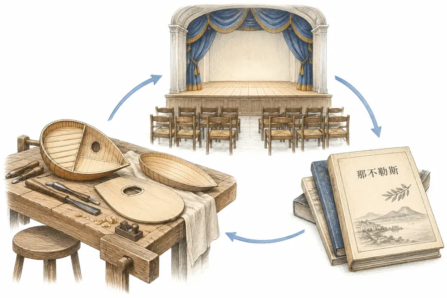
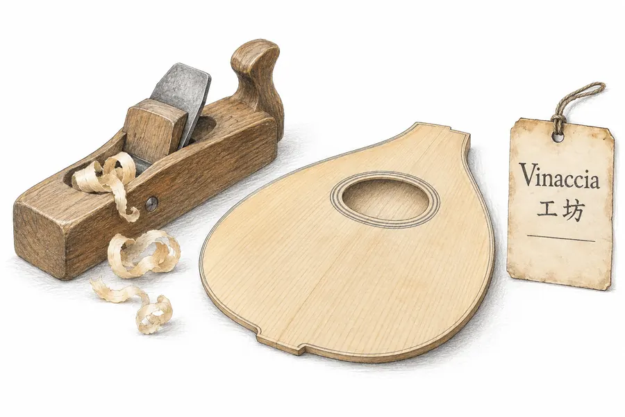
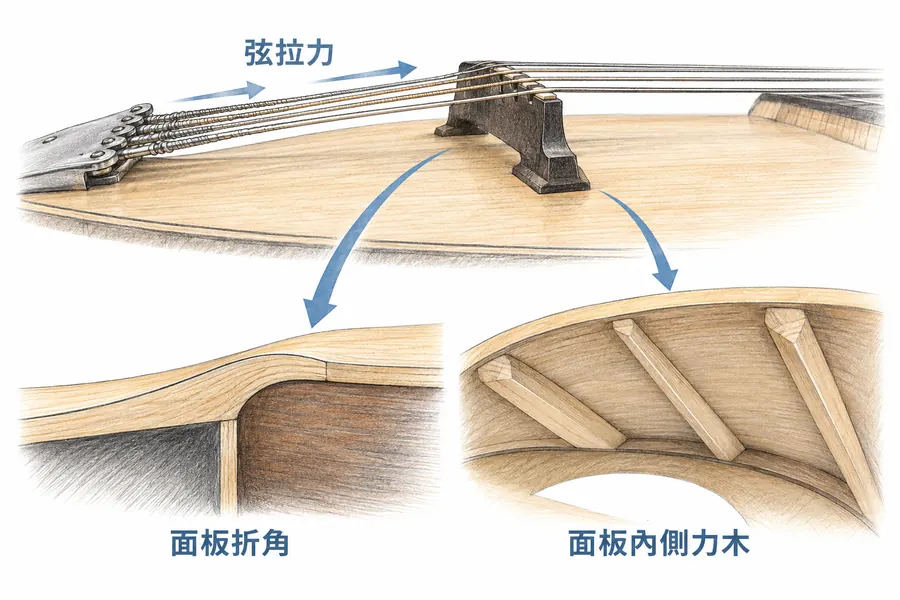
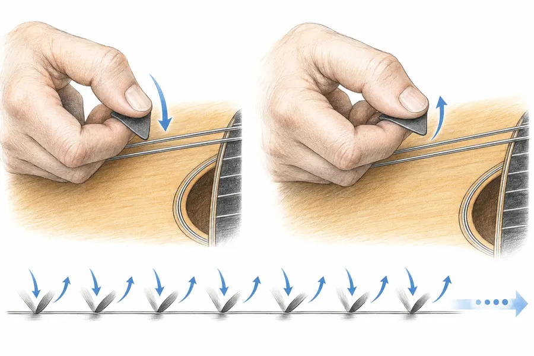
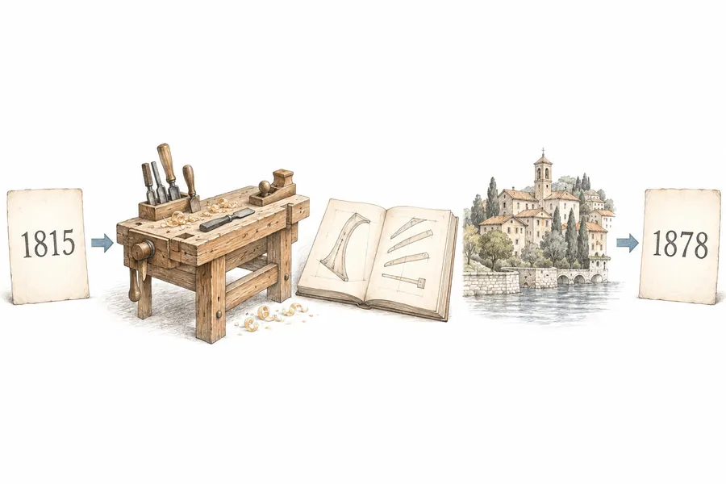
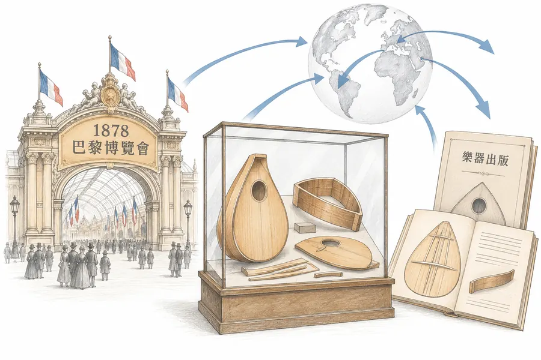
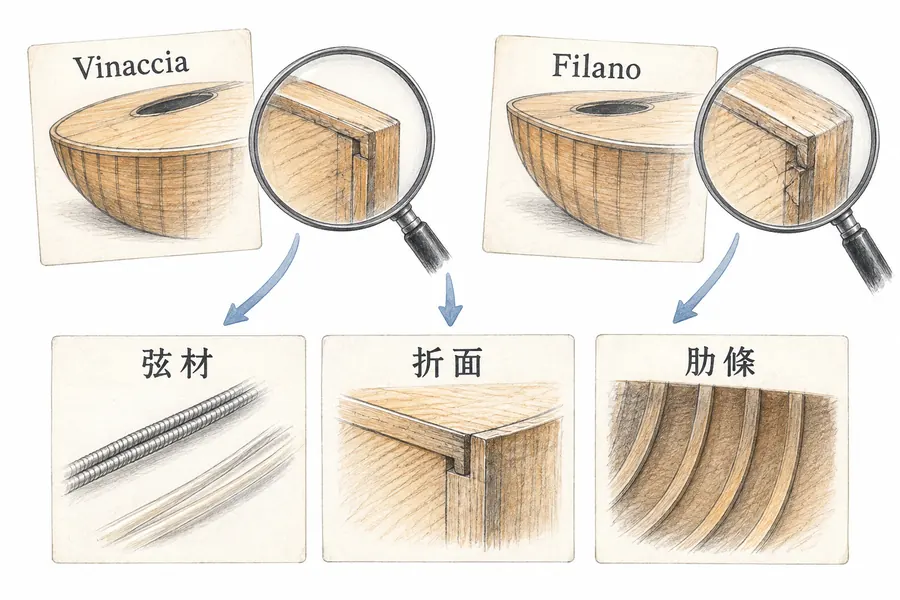

那不勒斯曼陀林的形成
第 3 章・建議學習 1 小時
那不勒斯、Vinaccia 家族、金屬弦與十九世紀的曼陀林
本章重點
- 十八世紀的那不勒斯是歐洲重要的大城市與音樂中心，歌劇、街頭音樂、家庭娛樂、教學與製琴業同時存在。
- 一種琴型要長期穩定，需要 足夠多人製作、購買、演奏與教學，不只是好設計。
- Vinaccia 家族「重要」，不等於「單一發明」。博物館用的是「probably designed by a member of the Vinaccia family」這種保留語氣。
- 金屬弦 帶來更直接的 attack 和更高張力，也把負荷送進面板。製琴師因此增加支撐，並在琴橋附近做出 折面（bend）。
- tremolo（顫音） 不是裝飾性炫技，而是為了解決撥弦樂器「撥片離弦後能量就衰減」的物理限制。
- 1815–1878 這段「不像黃金時代」的時期，反而可能是型制標準化真正發生的時候。
為什麼是那不勒斯？
那不勒斯在曼陀林史中的重要性，不只是因為一種琴用這座城市命名。
十八世紀的那不勒斯是歐洲重要的大城市與音樂中心。當時同時存在：
- 歌劇
- 街頭音樂
- 家庭娛樂
- 教學
- 製琴業
製琴師有足夠的市場可以反覆改良樂器，演奏者也有足夠的場合可以發展技巧。
Met 的研究指出，Vinaccia 與 Fabricatore 等家族在當地撥弦樂器製作上具有關鍵地位。
而那不勒斯到了十八世紀末，已成為義大利半島最重要的弦樂器生產中心之一。〔F09〕
本章要回答的重點是：它為什麼能成為後來全球最有影響力的型制？
答案同時涉及五件事：弦材、面板受力、製琴工坊、城市娛樂文化，以及十九世紀的出版市場。
只有把這些因素放在一起，才能理解八弦、四組複弦和 tremolo 為什麼最後變成多數人心中「曼陀林」的典型形象。
3.1 城市音樂與製琴文化
樂器型制要長期穩定，需要的不只是好設計。
它還需要足夠多的人 製作、購買、演奏與教學。
十八世紀的那不勒斯具備這種生態。
Met 的 Guitar Heroes 研究把當地放在更大的製琴史裡。
城市已有成熟的提琴與鍵盤樂器製作傳統。Gagliano、Vinaccia、Fabricatore 等家族，也在不同弦樂器上累積工藝。
到了十八世紀末，那不勒斯已是義大利重要的弦樂器製造中心。〔F09〕

圖解 3.1 城市音樂與製琴文化（示意）
從「好設計」到「一套系統」
這種城市環境讓樂器能持續改良。
- 製琴師可以根據演奏者的需要，逐步調整面板、bracing、琴橋與琴肚。
- 演奏者則會把更有投射力的新琴，帶進歌唱伴奏、室內娛樂與舞台。
當某種結構能被工坊 穩定重複製作，又有 教學和曲目支持，它才真正成為一套「系統」。
工坊不只做曼陀林
那不勒斯的製琴生態還有一個重要特點：工坊並不只服務單一樂器。
Met 對 Fabricatore 等家族的資料顯示，當地製琴師同時參與吉他與其他撥弦樂器的改良與量產。
這種跨樂器的工藝環境，會讓琴橋、裝飾、琴頸和弦材的技術互相流動。
因此，曼陀林的成熟不宜和整個城市的撥弦樂器產業切開來看。〔F09〕
經濟條件也是音樂條件
從經濟角度看，一個型制能長期留下來，也表示工坊能：
- 重複取得材料
- 訓練工人
- 找到買家
這些看似「音樂以外」的條件，其實決定了某種樂器能不能從少數精品變成可持續的文化。
十九世紀的 canzone napoletana
那不勒斯式的歷史，包含工藝與音樂文化兩個面向。
十九世紀的 canzone napoletana（那不勒斯歌曲）、家庭娛樂與城市形象，後來反過來強化了曼陀林的文化辨識度。
這讓這件樂器不只是一種技術方案，也成為地方聲音的象徵。
3.2 Vinaccia 家族的貢獻
Vinaccia 家族在那不勒斯曼陀林史上的地位很高。
原因是：有多件可研究的實物，能把十八世紀中後期的結構特徵具體化。
1781 年 Antonius Vinaccia 曼陀林
這把琴具有：
| 特徵 | 內容 |
|---|---|
| 圓背 | 二十三條狹窄的 ribs（琴背木條） |
| 面板 | spruce（雲杉） |
| 弦 | 八根弦、四組複弦 |
| 面板 | 琴橋附近有折面 |
Met 直接把這些描述為 Neapolitan school（那不勒斯學派）的典型特徵。〔F04〕

圖解 3.2 Vinaccia 家族的貢獻（示意）
「重要」不等於「單一發明」
但歷史上「重要」不等於「單一發明」。
Met 的展覽文章以 Vinaccia 家族作為經典那不勒斯型制形成的重要工坊，卻也把它放在更廣的城市製琴傳統裡。
這種說法比「某位 Vinaccia 某年發明曼陀林」更可靠，因為我們知道：
- 十八世紀各地本來就存在多種 mandolino。
- 那不勒斯系統本身也經歷弦材和支撐結構的演變。〔F09〕
注意那個 "probably"
Met 的 Guitar Heroes 文章用 「probably designed by a member of the Vinaccia family」 來描述那不勒斯式的重要設計來源。
這個 probably（大概、可能） 很重要。
它反映博物館願意承認 Vinaccia 家族的核心角色，同時避免把現有證據推成一個確定的單一發明者。〔F04〕
常見誤解：以為博物館已經「證明」Vinaccia 發明了現代曼陀林。
其實：博物館用的字是 probably。這是刻意保留的。
專業書該怎麼寫？
對專業書來說，這種措辭值得模仿。
| 不建議的寫法 | 較好的寫法 |
|---|---|
| Vinaccia 發明了現代曼陀林。 | Vinaccia 家族保存下來的實物，是追蹤那不勒斯型制成熟最重要的一組證據。 |
後者資訊更多，也更不容易被新發現推翻。
研究製琴家族的正確方法
研究製琴家族時，最好用三個「可確認」來描述貢獻：
- 可確認的實物
- 可確認的年代
- 可確認的結構
如此一來，新史料出現時可以修正細節，便能逐項更新研究結論。
這也是本書後面處理 Gibson、Calace 與 Suzuki 歷史時採用的原則。
3.3 金屬弦、折面面板與力木
金屬弦讓曼陀林得到更直接的 attack 和更高的張力。
但它同時也把負荷送進面板。
2022 與 2024 年的研究都指出，那不勒斯現代型制的發展和提高弦張力有關。
為了承受這股靜態的力，製琴師做了兩件事：
- 增加支撐（bracing，力木）。
- 在琴橋附近形成 折面／bend，讓面板在受力區獲得不同的幾何剛性。〔F07〕〔F08〕
1784 Joseph Filano：很有價值的過渡案例
研究團隊在米蘭的 Museo degli Strumenti Musicali del Castello Sforzesco（斯福爾扎城堡樂器博物館），對它進行 in-situ（現地）的聲學與結構調查。
這把琴的條件是：
| 項目 | 內容 |
|---|---|
| 弦 | 八根金屬弦 |
| 面板 | 雲杉 |
| 折面角 | 約八度 |
| 琴肚 | maple（楓木）ribs 構成 |
它不是「現代琴的完成版」。
但它清楚顯示：晚十八世紀的那不勒斯製琴，已經朝高張力系統前進。〔F07〕

圖解 3.3 金屬弦 折面面板與力木（示意）
「傳統」不是靜態複製
更重要的是，研究指出十九世紀以後的曼陀林 soundboard 出現了 額外的 brace（力木），用來應付更高的弦張力。
這個細節讓我們理解：「傳統」並不是靜態複製。
看起來仍然是圓背和圓音孔，內部支撐卻可能已經因材料與演奏需求而改變。〔F08〕
高張力還會改變什麼？
高張力除了增加面板負荷，也會改變兩件事：
- 琴橋的接觸
- 琴頸的長期穩定需求
比較古琴時，要把 折面、弦材與內部支撐 一起觀察。
同樣的外觀特徵，如果搭配不同的弦材、bracing 與 top thickness（面板厚度），實際受力可能差很多。
聲學與結構研究的價值，就在於把視覺特徵放回 力學系統 裡。
對保存修復的關鍵提醒
對保存修復而言，這一點尤其關鍵。
老琴如果換上比歷史設計更高張力的現代弦，短期可能得到更大音量，長期卻可能增加 面板、琴橋與琴頸 的負荷。
能不能使用某一套弦，應該由 樂器狀況與設計共同判斷，確認琴弦張力符合該琴的承重能力。
3.4 顫音與歌唱性旋律
撥弦樂器有一個物理限制：
能量在撥片離弦後就開始衰減。
演奏者不像小提琴手那樣，能用弓在同一個音上持續輸入能量。
當曼陀林被要求演奏歌唱性旋律時，這個限制就變成一個音樂問題。
tremolo 的核心功能，就是用 規律的重複起音，讓聽覺把一連串脈衝整合成比較連續的聲線。
比喻：這就像電影。一格一格的靜態畫面，放映得夠快、夠穩，眼睛就會把它看成連續的動作。tremolo 做的就是讓耳朵做同樣的事。
好的 tremolo 和壞的 tremolo
成熟的顫音，把每一次起音連成 均勻、有方向 的旋律。
| 狀況 | 聽起來怎樣 |
|---|---|
| 重音、間距和撥片角度太明顯 | 聲音變成密集的機關槍 |
| 速度均勻、動態有方向 | 聽者能清楚聽見連續的旋律線 |
這也解釋了為什麼古典曼陀林教學會把 tremolo 和 phrase（樂句）、crescendo（漸強）、換弦 放在一起教。
速度練習與音樂表現，本來就該連在一起。

圖解 3.4 顫音與歌唱性旋律（示意）
教本代表技術的系統化
十九世紀末與二十世紀初的專業教本，像 Carlo Munier 與 Raffaele Calace 的方法，顯示曼陀林技術已經改變。
它從單純的「會彈曲子」，進入 系統化訓練 的時代。
這些教本比十八世紀晚得多，卻反映了同一件事。
那不勒斯型制成熟後，演奏語言如何被整理成可傳授的學派。
兩個層次：重複率與樂句形狀
好的 tremolo 還牽涉「重複率」和「樂句形狀」兩個層次。
| 問題 | 結果 |
|---|---|
| 重複率太慢 | 聽者會明顯聽到一顆一顆音 |
| 太快，但每一下力度不均 | 出現顆粒抖動 |
| 快慢適中、力度均勻 | 重複動作退到背景，由漸強、diminuendo（漸弱）與樂句方向成為前景 |
所以，不要只用「每分鐘幾下」來評分
因此教學上不宜只用「每分鐘多少下」來衡量 tremolo。
更好的練習順序是：
- 先在 慢速 維持完全均勻。
- 再用 固定拍內密度 做動態變化。
- 最後把它 放進旋律。
這一點會在右手技法章再展開。
在歷史章先理解它的功能，就不會把 tremolo 誤解成 裝飾性的炫技。
3.5 1815 至 1878 年的發展
曼陀林的流行程度曾多次起伏。
Sparks 對 1815–1878 的研究指出：
- 早期 mandoline 與 mandolino 作為 concert instruments（音樂會樂器） 一度衰退。
- 這段時間，樂器在義大利以外幾乎不為大眾熟知。
- 但在義大利 內部，現代曼陀林的型制和使用方式仍在形成。〔F02〕

圖解 3.5 1815 至 1878 年的發展（示意）
「不像黃金時代」的時期，反而重要
這段時期反而很重要。
它讓我們看到：標準化常常發生在市場相對局部的環境裡。
製琴師與演奏家可以在地方傳統裡，慢慢把下面這些事固定下來：
- 弦組
- 琴橋
- 面板
- 曲目
- 教學
等到十九世紀後半樂器重新進入國際舞台時，它已經比十八世紀「多型並存」的 mandolino 世界 統一得多。
低潮與高標準化，可以同時發生
1815–1878 的「低潮」也提醒我們：不要把樂器史寫成流行度排行榜。
Sparks 一方面描述 mandoline／mandolino 作為 concert instruments 的衰退；另一方面，又把同一時期列為 Italy and the Creation of the Modern Mandolin（義大利與現代曼陀林的創造）。
換句話說：舞台能見度下降的同時，內部的型制標準化反而可能正在發生。〔F02〕
這種情況在樂器史並不少見：公開熱潮和技術成熟不一定同步。
工坊、教本和地方社群可以在國際市場不注意時繼續累積。
等到新的博覽會、巡演或移民網路出現，成熟的產品才突然被外界「發現」。
對中古琴鑑定的意義
現代那不勒斯曼陀林，是在十八世紀 Vinaccia 等工坊的基礎上持續發展的。
它是一條連續傳統中，不斷吸收 高張力、bracing、指板與演奏需求 的結果。
這點對中古琴鑑定也很重要：
兩把都叫 Neapolitan 的琴，如果相差一百年，內部與尺寸仍可能有相當差異。
3.6 巴黎博覽會與國際熱潮
Sparks 把 1878 年巴黎博覽會 視為曼陀林重新進入國際視野的重要節點。
義大利演奏者在展覽期間成功吸引法國觀眾。
之後，circoli mandolinisti（曼陀林社團）、教學與獨奏家活動逐漸增長。
同時，西班牙 bandurria（班杜里亞琴） 的演奏也影響了曲目和公眾想像。〔F18〕

圖解 3.6 巴黎博覽會與國際熱潮（示意）
「重新被看見」和十八世紀不一樣
「重新被看見」和十八世紀在宮廷／沙龍裡的流通，是兩件不同的事。
十九世紀後半已經有更成熟的：
- 樂譜出版
- 市民社團
- 工業生產
- 跨國巡演網路
一件樂器可以透過教本、俱樂部和商品市場快速複製。
這為 1892–1918 的全球 virtuoso era（演奏家時代） 奠定了條件。
黃金時代不是「忽然很多人喜歡」
所以，所謂曼陀林黃金時代，不應只理解成「忽然很多人喜歡」。
它是 製琴、演奏、出版與社群組織同時擴張 的結果。
下一章從全球傳播來看，就會更清楚看到每個地區如何把這套義大利系統改造成自己的文化。〔F19〕
博覽會讓不同撥弦傳統同場比較
巴黎博覽會的重要性，還在於它讓不同的撥弦傳統在同一個場合被比較。
Sparks 特別提到西班牙 bandurria players 對 repertoire（曲目）的影響。
這說明曼陀林的再流行，是在國際展覽與城市娛樂中，和其他撥弦樂器互相模仿、競爭 的結果。〔F18〕
教本的角色也變了
當一件樂器開始被大量業餘者學習，教本的作用也會改變。
| 學習者 | 怎麼解決手法問題 |
|---|---|
| 專業 virtuoso（演奏家） | 靠師徒與口傳細節 |
| 大量新手 | 需要標準化指法、記譜與練習曲 |
十九世紀末曼陀林教育出版的成長，和社團化是同一個市場現象的兩面。
3.7 案例：Vinaccia 與 Filano 的結構比較
1781 Vinaccia 和 1784 Filano 年代接近，卻分別由不同種類的證據來呈現：
| 樂器 | 主要證據類型 | 能看到什麼 |
|---|---|---|
| 1781 Vinaccia | 博物館館藏描述 | 高度裝飾、23 ribs、八弦四 course、那不勒斯折面 |
| 1784 Filano | 現代聲學調查 | 材料辨識、面板裂縫、聲學量測、有限元素分析 |
後者讓我們看到：一把晚巴洛克曼陀林實際上是 如何振動 的。〔F04〕〔F07〕

圖解 3.7 案例 Vinaccia 與 Filano 的結構比較（示意）
「形式相似」不等於「完全相同」
兩者放在一起最有價值的地方，是避免把「形式相似」等同「完全相同」。
同一時期不同工坊的 ribs 數、材料與細節可以不同。
即使都是那不勒斯琴，也不應反推每一件都使用同樣木材或同樣 bracing。
館藏告訴我們 個體是什麼；研究則幫我們理解 系統如何工作。
這也是全書查證原則的縮影
| 你手上有的證據 | 你可以寫到多確定 |
|---|---|
| 只有外觀照片 | 只描述外觀 |
| 有原廠／博物館資料 | 才把材料和尺寸寫得更確定 |
| 有聲學研究 | 再討論結構如何影響振動 |
館藏照片不是結論
這兩件實物還能用來理解「館藏照片不是結論」。
| 證據類型 | 看得出 | 看不出 |
|---|---|---|
| 照片 | 外形、裝飾、部分材料 | 面板厚度、局部 stiffness（剛性）、模態 |
| 有限元素模型 | 幫忙解釋振動 | 必須建立在可靠幾何與材料參數上 |
不同證據各有盲點，互補才有力量。〔F07〕
案例研究其實是研究流程示範
因此，案例研究除了把名琴拿來講故事，也包含在示範一套研究流程：
- 先做 文獻與尺寸調查。
- 再做 材料與聲學量測。
- 最後才建立 模型或複製琴。
這種方法也可以縮小到收藏者的日常：先確認實物，再談推論。
自我學習題庫

學習檢查：作答、核對、複習
先自己作答，再看答案。答錯時回到本章相關小節重新讀一次。
1. 那不勒斯式曼陀林的重要特徵包含？
- A. 四組複弦與金屬弦
- B. 六根單弦
- C. 無琴格
- D. 固定琴橋
2. 顫音在曼陀林上常用來解決什麼問題？
- A. 換弦太慢
- B. 單次撥弦延音有限
- C. 琴頭太重
- D. 音孔太小
3. Vinaccia 家族的重要性主要來自？
- A. 只因為傳說
- B. 有可研究的實物與製琴脈絡
- C. 只生產吉他
- D. 發明電子拾音器
答案：1.A 2.B 3.B
本章主要查證來源

查證來源：找原文、核條件、留紀錄
| 編號 | 來源與用途 |
|---|---|
| 〔F02〕 | Paul Sparks，The Classical Mandolin，Oxford University Press, 2005。1815 年以後至現代的曼陀林史；1878、1892–1918、兩戰之間與戰後發展。 |
| 〔F04〕 | The Metropolitan Museum of Art，Mandolin, Antonius Vinaccia, Naples, 1781，Met 89.4.2140。八弦、四組複弦、與小提琴同音高及那不勒斯式折面面板等實物資料。 |
| 〔F07〕 | Quintavalla et al.，Acoustical Survey and Finite Element Analyses of Late Baroque Mandolin，International Journal of Wood Culture, 2024。1784 Joseph Filano 那不勒斯曼陀林；混合／金屬弦轉型、折面、材料與聲學調查。 |
| 〔F08〕 | Quintavalla et al.，The Acoustics of Traditional Italian Mandolins and Their Relation with Soundboard Wood Properties，International Journal of Wood Culture 2, 2022。1906 那不勒斯、1908 米蘭與羅馬式等現代義大利曼陀林聲學比較。 |
| 〔F09〕 | The Metropolitan Museum of Art，From Naples to New York，Guitar Heroes exhibition essay。那不勒斯製琴環境、美國移民、Spanish Students 與美國 mandolin craze。 |
| 〔F18〕 | Paul Sparks，1878–1892, The Classical Mandolin，Oxford University Press, 2005。1878 巴黎博覽會、義大利 circoli mandolinisti 與再流行。 |
| 〔F19〕 | Paul Sparks，1892–1918, The Classical Mandolin，Oxford University Press, 2005。歐洲、美國、日本、南美的 virtuoso era 與全球流行。 |
連結：
- 〔F02〕https://academic.oup.com/book/10241
- 〔F04〕https://www.metmuseum.org/art/collection/search/504543
- 〔F07〕https://www.sciencedirect.com/org/science/article/pii/S2772318624000018
- 〔F08〕https://www.sciencedirect.com/org/science/article/pii/S2772318622000017
- 〔F09〕https://blog.metmuseum.org/guitarheroes/from-naples-to-new-york-mobile/
- 〔F18〕https://academic.oup.com/book/10241/chapter-abstract/157932074
- 〔F19〕https://academic.oup.com/book/10241/chapter-abstract/157933927